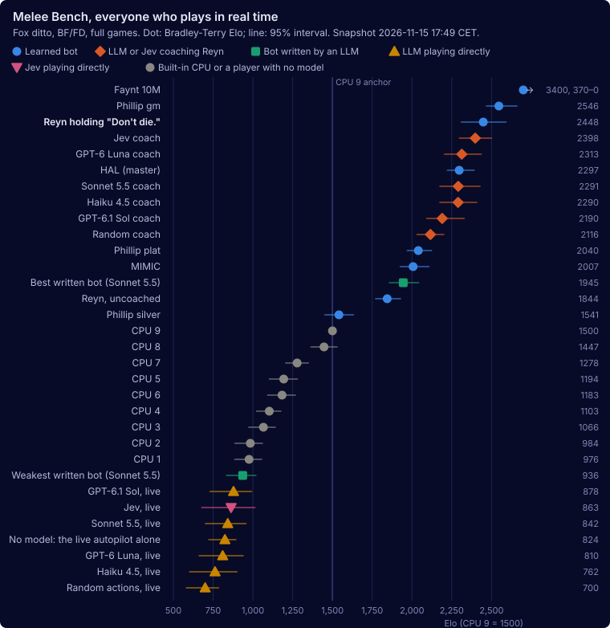
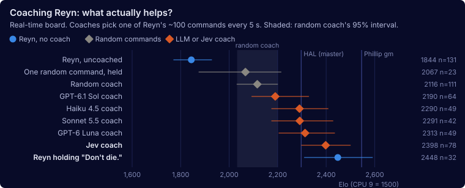

Melee × LLM
Melee Bot Elo
LLMs in a game that doesn't wait
CPUs, learned bots and frontier LLMs on one Elo scale
Mateo Amado · 2026-11-14 · melee.m19182.dev

Why Melee
A game that doesn't wait
60 fps
one frame is 16.7 ms
1–3 s
for an LLM to reply: 60 to 180 frames of getting hit
- LLM game benchmarks are mostly turn-based: chess, Pokémon, Slay the Spire. The game waits.
- Melee (2001) is still played competitively, at frame-level precision
- Great open tooling: Slippi replays and netplay, libmelee to read and press buttons, a decompiled game
History
Ten years of Melee bots
2001
Built-in CPUs, levels 1–92015
SmashBot: hand-written, frame-perfect2017
Phillip: RL, beat pros at 2-frame reactions2024
Phillip at human speed: lost to Zain, beat Moky2025
HAL: cloned pro Fox for ~$5, beats CPU 9 95%The last six weeks
- Faynt: 240 of 244 vs Phillip, public weights
- HAL scaled up: ~2200 Elo, top 1% of humans
- Reyn: a bot that takes orders in plain English
- Jev: picks one of N options in 0.15 s
- stomped.dev: a ranked ladder for bots
- A simulator: the game ~100× faster than real time
Nobody had put these bots on one scale, or asked where an LLM fits among them.
The bench
Five jobs for an LLM
Too slow to press buttons every frame, so each setup gives the LLM a higher-level job
1 · Plays, untimed
Picks moves from a text view. The game pauses while it thinks.2 · Plays, live
Same, at full speed. A reply older than 2 s is thrown away.3 · Jev plays
A fast model answering multiple choice in 0.15 s.4 · Coaches Reyn
Reyn plays every frame; every 5 s the coach picks an English command.5 · Writes a bot
A coding agent gets 30 minutes to write a Python bot.- Haiku 4.5, Sonnet 5.5, GPT-6 Luna, GPT-6.1 Sol, against CPUs and five learned bots
- Fox vs Fox, one Elo fit, CPU level 9 = 1500, 95% intervals
- A scheduler picks each game to shrink the widest intervals: 1,573 games overnight in 9.0 h
2,459 real-time and 2,018 untimed games on two boards
Results

The real-time board
- Faynt never lost: 390–0. Then Phillip gm (2488) and HAL (2234)
- Coached Reyn sits around HAL
- Bots written by LLMs sit around CPU 9
- Every LLM playing live is at the bottom: 1055–1114, about a level 4 CPU
Finding 1
In real time, speed beats smarts

1692 → 1114
GPT-6.1 Sol, untimed (beats CPU 9) → live
95%
of Sol's live replies arrive too late
Live, every model loses 272–578 points and they all tie with Jev. The LLM adds nothing measurable over the autopilot around it.
Finding 2
The best coach is two words

- Reyn, no orders: 1746
- Random command every 5 s: 2068
- LLM coaches: +64 to +191 over random, within noise
- Jev coach: 2346
“Don't die.”
held all game, no coach: 2398
Jev wins by accident: its favourite pick, “kill now”, is mapped by Reyn to “Don't die.”
Findings 3, 4
An LLM writes a CPU 9 in 30 min
1663
Sonnet 5.5: 135 lines, done in 21 minutes, just above CPU 9
- Haiku 4.5, 108 lines: 1609
- Opus 5.5, the most engineered at 303 lines: 1542
- One run each: input timing decides everything, so this ranks nothing yet
Screenshots don't help
Haiku vs a level 5 CPU, 8 games each
Text
4–4
Screenshot
1–7
Both
5–3
From images, models read damage almost perfectly but left/right and facing at about chance.
Also built
What else I built
A website
Both boards, a page per entrant, every game drawn live in 2D, replays with the AI's decisions on a timeline, a live stream.An AI commentary booth
Two voiced casters, Charlie and Laura, written live by a fast LLM.Laura: Faynt doesn't chase, Charlie, he collects.
MeleeBot
Our own Yoshi, cloned from 23,000 ranked online games. 20M parameters, 1 win in 12 against CPU 9. Self-play is next.A simulator
The decompiled game without an emulator: 287 of 300 replays match frame for frame, ~100× faster.Next
What's next
- Superplay in the simulator: save a moment, try thousands of inputs, keep the best
- A faster brain: a small local model at ~0.5 s per decision
- A better coach: start from “Don't die.” and switch only with a reason
- MeleeBot: self-play, then the stomped.dev ladder
Write-up, boards, replays and live games
melee.m19182.dev/writeup